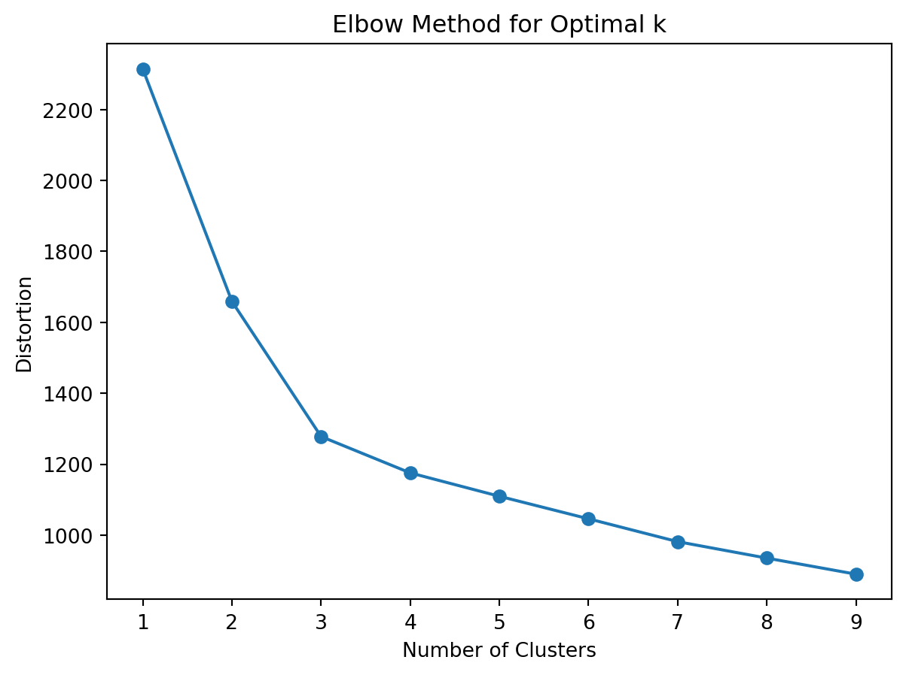
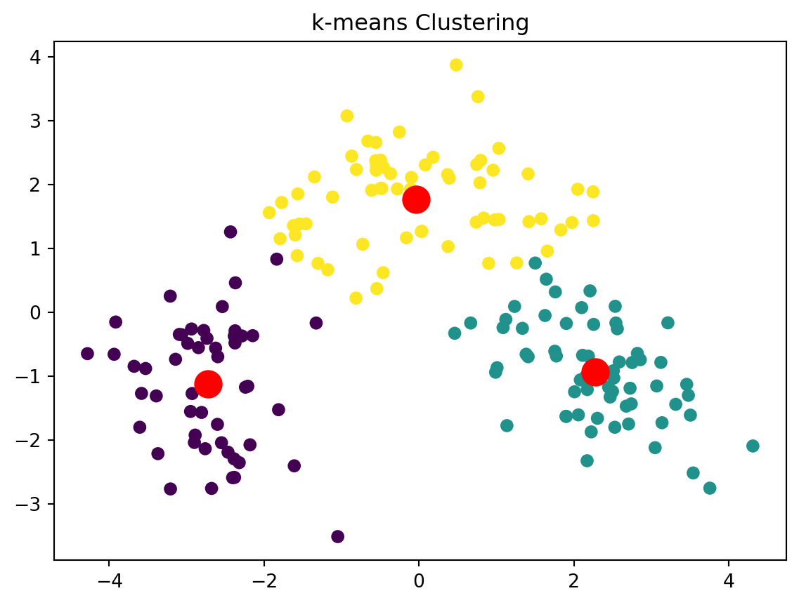
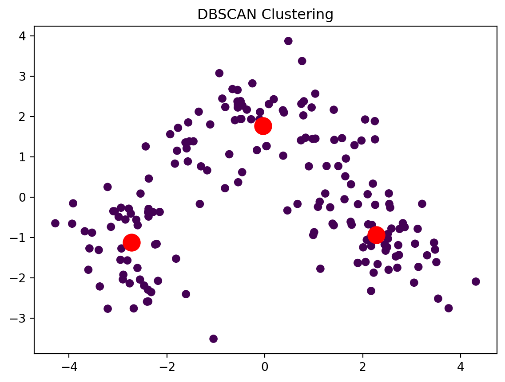

Clustering is a technique used in unsupervised machine learning to group similar instances together into clusters. The goal is to identify patterns and relationships within the data without any pre-existing labels. Clustering is a great tool for data analysis, customer segmentation, recommender systems, search engines, image segmentation, semi-supervised learning, dimensionality reduction, and more.
k-means
It was proposed by Stuart Lloyd at Bell Labs in 1957 as a technique for pulse-code modulation, but it was only published outside of the company in 1982. In 1965, Edward W. Forgy had published virtually the same algorithm, so k-means is sometimes referred to as the Lloyd–Forgy algorithm.
```{python}# Load the wine datasetdata = load_wine()X = data.data# Standardize the featuresscaler = StandardScaler()X = scaler.fit_transform(X)# Calculate distortion for a range of cluster valuesdistortions = []for i inrange(1, 10): kmeans = KMeans(n_clusters=i, n_init=10, random_state=42) kmeans.fit(X) distortions.append(kmeans.inertia_)# Plot the elbow curveplt.figure()plt.plot(range(1, 10), distortions, marker='o')plt.title('Elbow Method for Optimal k')plt.xlabel('Number of Clusters')plt.ylabel('Distortion')plt.show()```

As we can see, the best number of cluster is 3.
Code
```{python}kmeans = KMeans(n_clusters=3, n_init='auto')kmeans.fit(X)labels = kmeans.labels_# Reduce the data to two dimensions using PCApca = PCA(n_components=2)X_pca = pca.fit_transform(X)# Plot the dataplt.scatter(X_pca[:, 0], X_pca[:, 1], c=labels, cmap='viridis')# Calculate the cluster centers in the PCA reduced space and plot themcenters_pca = pca.transform(kmeans.cluster_centers_)plt.scatter(centers_pca[:, 0], centers_pca[:, 1], s=200, c='red')plt.title('k-means Clustering')plt.show()```

DBSCAN
Code
```{python}# Standardize the featuresscaler = StandardScaler()X_scaled = scaler.fit_transform(X)# Apply DBSCAN clusteringdbscan = DBSCAN(eps=0.5, min_samples=5)labels = dbscan.fit_predict(X_scaled)# Reduce the data to two dimensions using PCApca = PCA(n_components=2)clustered_data_2d = pca.fit_transform(X_scaled)# Plot the dataplt.scatter(clustered_data_2d[:, 0], clustered_data_2d[:, 1], c=labels, cmap='viridis')# Highlight noise points (label -1) with a different colorcenters_pca = pca.transform(kmeans.cluster_centers_)plt.scatter(centers_pca[:, 0], centers_pca[:, 1], s=200, c='red')# Add labels and titleplt.title('DBSCAN Clustering')# plt.legend()plt.show()```

Source Code
---execute: echo: fencedtitle: "Clustering"toc: truetoc-title: "Table of Contents"title-block-banner: falseauthor: Kamila Nurkhametova---Clustering is a technique used in unsupervised machine learning to group similar instances together into clusters. The goal is to identify patterns and relationships within the data without any pre-existing labels. Clustering is a great tool for data analysis, customer segmentation, recommender systems, search engines, image segmentation, semi-supervised learning, dimensionality reduction, and more.## k-meansIt was proposed by Stuart Lloyd at Bell Labs in 1957 as a technique for pulse-code modulation, but it was only published outside of the company in 1982. In 1965, Edward W. Forgy had published virtually the same algorithm, so k-means is sometimes referred to as the Lloyd–Forgy algorithm.```{python}import numpy as npimport matplotlib.pyplot as pltfrom sklearn.datasets import load_winefrom sklearn.cluster import KMeansfrom sklearn.cluster import DBSCANfrom sklearn.preprocessing import StandardScalerfrom sklearn.decomposition import PCA``````{python}# Load the wine datasetdata = load_wine()X = data.data# Standardize the featuresscaler = StandardScaler()X = scaler.fit_transform(X)# Calculate distortion for a range of cluster valuesdistortions = []for i inrange(1, 10): kmeans = KMeans(n_clusters=i, n_init=10, random_state=42) kmeans.fit(X) distortions.append(kmeans.inertia_)# Plot the elbow curveplt.figure()plt.plot(range(1, 10), distortions, marker='o')plt.title('Elbow Method for Optimal k')plt.xlabel('Number of Clusters')plt.ylabel('Distortion')plt.show()```As we can see, the best number of cluster is 3.```{python}kmeans = KMeans(n_clusters=3, n_init='auto')kmeans.fit(X)labels = kmeans.labels_# Reduce the data to two dimensions using PCApca = PCA(n_components=2)X_pca = pca.fit_transform(X)# Plot the dataplt.scatter(X_pca[:, 0], X_pca[:, 1], c=labels, cmap='viridis')# Calculate the cluster centers in the PCA reduced space and plot themcenters_pca = pca.transform(kmeans.cluster_centers_)plt.scatter(centers_pca[:, 0], centers_pca[:, 1], s=200, c='red')plt.title('k-means Clustering')plt.show()```## DBSCAN```{python}# Standardize the featuresscaler = StandardScaler()X_scaled = scaler.fit_transform(X)# Apply DBSCAN clusteringdbscan = DBSCAN(eps=0.5, min_samples=5)labels = dbscan.fit_predict(X_scaled)# Reduce the data to two dimensions using PCApca = PCA(n_components=2)clustered_data_2d = pca.fit_transform(X_scaled)# Plot the dataplt.scatter(clustered_data_2d[:, 0], clustered_data_2d[:, 1], c=labels, cmap='viridis')# Highlight noise points (label -1) with a different colorcenters_pca = pca.transform(kmeans.cluster_centers_)plt.scatter(centers_pca[:, 0], centers_pca[:, 1], s=200, c='red')# Add labels and titleplt.title('DBSCAN Clustering')# plt.legend()plt.show()```